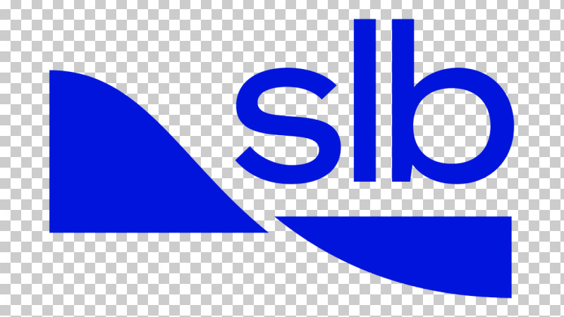

01 — Data & Data Platform
Nền tảng dữ liệu vững chắc cho mọi giải pháp số.
NexusLink cung cấp các giải pháp chuyển đổi số từ xây dựng nền tảng dữ liệu, tích hợp hệ thống, trực quan hóa, AI đến Digital Twin, giúp doanh nghiệp khai thác hiệu quả dữ liệu và nâng cao năng lực ra quyết định.
Cách NexusLink chuyển đổi số
NexusLink không chỉ số hóa dữ liệu mà xây dựng một chuỗi giá trị hoàn chỉnh — kết nối dữ liệu rời rạc, biến thông tin phức tạp thành tri thức có thể khai thác và đưa trực tiếp vào quá trình ra quyết định.
Năng lực
Nền tảng dữ liệu vững chắc cho mọi giải pháp số.
Quản lý và trực quan hóa dữ liệu không gian.
Khai thác tri thức và hỗ trợ ra quyết định bằng AI.
Năng lực nổi bật: bản sao số cho mô hình kỹ thuật.
Trực quan hóa dữ liệu để theo dõi và ra quyết định nhanh.
Kết nối hệ thống, giảm thao tác thủ công.
Quy trình
Hiểu bài toán và hiện trạng dữ liệu.
Tổ chức và chuẩn hóa nguồn dữ liệu.
Kết nối hệ thống và các nguồn dữ liệu.
Phát triển ứng dụng, dashboard, AI hoặc Digital Twin.
Đưa hệ thống vào vận hành thực tế.
Vận hành, tối ưu và mở rộng.
Công nghệ

Case study
Giá trị
Dữ liệu không còn nằm rời rạc ở nhiều hệ thống.
Giảm thao tác thủ công và thời gian tìm kiếm thông tin.
Thông tin được phân tích và trực quan hóa đúng lúc.
Biến dữ liệu và kinh nghiệm thành tài sản số của doanh nghiệp.
Hệ thống có thể tiếp tục tích hợp và phát triển theo nhu cầu.
Hãy cùng NexusLink biến dữ liệu và quy trình hiện tại thành một giải pháp số phù hợp với doanh nghiệp.
Trao đổi với NexusLink